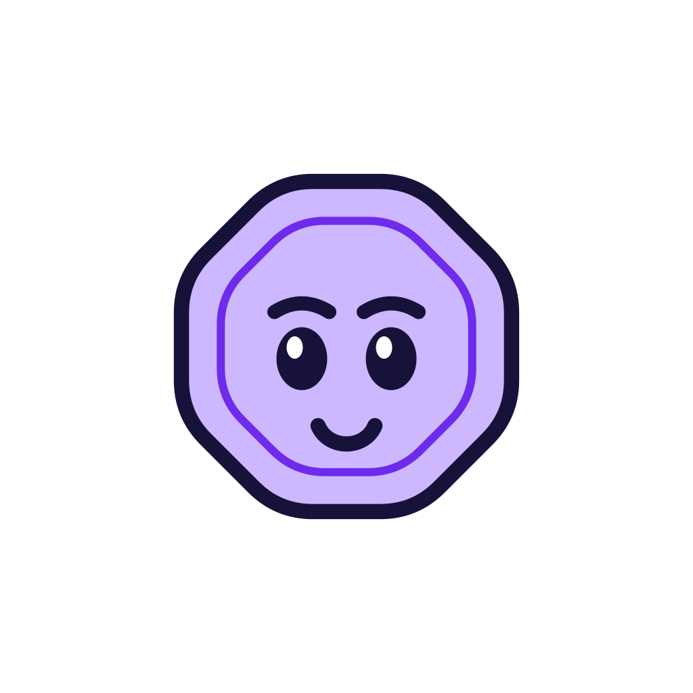
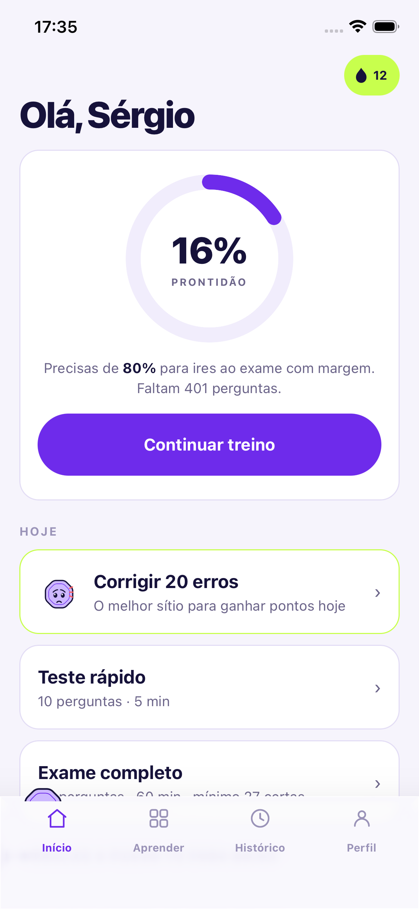
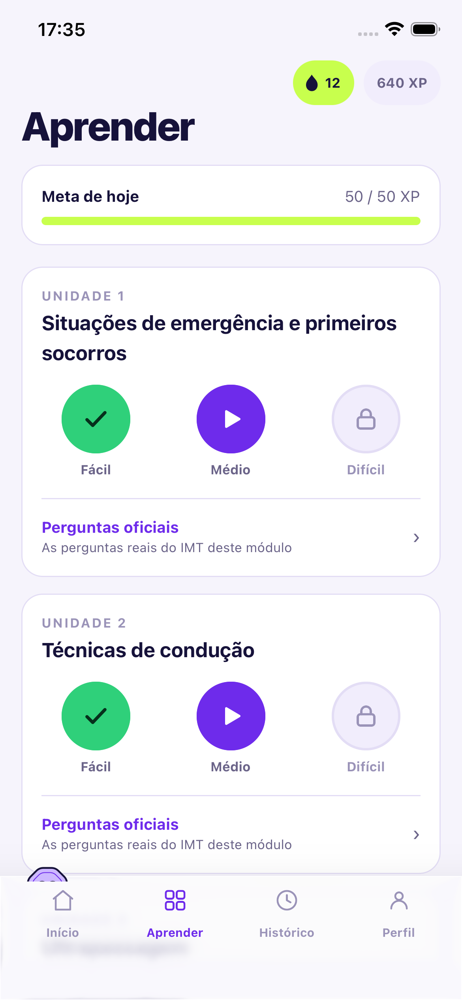
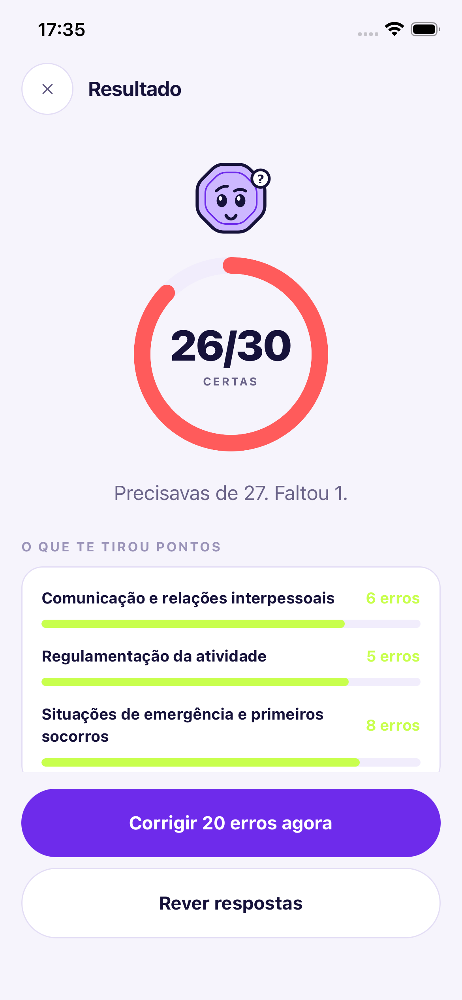

Prepara o exame e passa à primeira.
Perguntas reais do IMT, correção instantânea e um plano diário que te leva até à prontidão. Sem anúncios.


Sabes sempre se já estás pronto.
Um anel, não um menu de botões. Vês num relance quanto falta para ires ao exame com margem, e qual o próximo passo certo para lá chegar.
- Prontidão real, não só perguntas feitas
- Diz-te quantas perguntas ainda faltam

Perguntas reais do IMT, por módulo.
Os módulos do exame, cada um em Fácil, Médio e Difícil. Só perguntas verificadas contra as fontes oficiais: quando algo é dúvida, dizemos.
- Todos os módulos, do fácil ao difícil
- Perguntas oficiais, não inventadas

Faz o exame antes do exame.
Simulação com o critério real: 30 perguntas, 60 minutos, mínimo 27 certas. No fim vês o que te tirou pontos, e os teus erros voltam sozinhos, à altura certa, até fixares.
- 30 perguntas · 60 min · mínimo 27
- Repetição espaçada dos teus erros
O que te mantém a estudar até ao fim.
Hábito diário
Sequência de dias, XP e conquistas para não parares antes do exame.
Honesto contigo
Respostas verificadas contra as fontes. Quando há dúvida, admitimos.
Teu, no teu telemóvel
Funciona offline. Conta é opcional, só para sincronizar entre telemóveis.
Sem anúncios. Nunca.
Enquanto outras apps te enchem de publicidade, aqui pagas uma vez e estudas em paz. Grátis com 3 módulos; desbloqueia tudo quando quiseres.